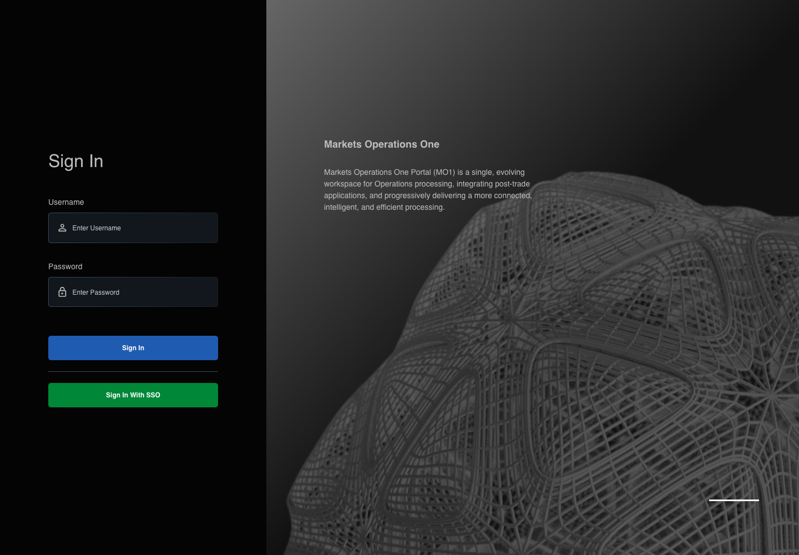

All canonical cases
AUTH-015: Prevent submission with missing both Business acceptance remains unverified. Owner: unknown. Review the canonical definition and fixture limits before acceptance.
Latest local result: PASS Business acceptance: NOT_ESTABLISHED.
The latest local result describes execution. The historical definition review assesses the case design before execution.
Latest step screenshot evidence: COMPLETE . 9/9 canonical steps have execution screenshots.
Canonical Gherkin definition . Definition version: 2. SHA-256: 50469c6c4c8ae6ec3d0f6f00530bdfb39302ae54814a40df86583c530e8fa1de.
Historical definition review (preflight): UNVERIFIED A definition review FAIL can coexist with local PASS. The definition failed preflight quality checks.
This historical review does not change the latest execution result. Resolve definition gaps before business acceptance.
Canonical Gherkin steps Feature: Login
@AUTH-015
Scenario: Prevent submission with missing both
Given User A is an entitled fixture user in an isolated browser context with empty browser storage
And the LOCAL login page is visible
When User A clears the textbox with placeholder "Enter Username" on the login page
And User A clears the text input with placeholder "Enter Password" on the login page
And User A clicks the button labelled "Sign In" on the login page
Then the textbox with placeholder "Enter Username" on the login page is visible
And the text input with placeholder "Enter Password" on the login page is visible
And the button labelled "Sign In" on the login page is visible
And the browser records zero POST requests to "/api/auth/v2/sso/login" Acceptance and evidence limits: NO_COMPLETE_REAL_APPLICATION_BINDING, CANONICAL_REVIEW_OR_EVIDENCE_UNRESOLVED.
Planned essential canonical frames: 2. Plan completeness requires separate review.
Latest attempt AUTH-015 actual React canonical steps PASS · application/run-050/auth-015-actual-react-canonical-steps-5a16587ba61b-attempt-1 · ACTUAL_APPLICATION_LOCAL_SERVICES
Actual MFE React; controlled login API responses; hostname proxy preserves source environment decisions. No real identity or deployment acceptance.
2026-10-22T06:09:23.215Z to 2026-10-22T06:09:27.543Z
Assertions and result · Artifact manifest · Exact run inputs and source hashes
Result SHA-256: 4f4a5cf8b1eca317773c8c88669c4a041c279e64b5f5471dd7310ffc5409da8a Playwright trace
Machine observations Screenshot capture: CAPTURED. Named frames: 10.
Step screenshot evidence: COMPLETE. 9/9 canonical steps have execution screenshots.
Canonical step timeline Given User A is an entitled fixture user in an isolated browser context with empty browser storage
1. step-01 Visible state after step 1: Given User A is an entitled fixture user in an isolated browser context with empty browser storage
2026-10-22T06:09:23.611Z · 1440×1000cb9c3b8047859412e8abcaed51ad9ecefb4bd820c8849af4992e593d500d1836 And the LOCAL login page is visible
2. step-02 Visible state after step 2: And the LOCAL login page is visible
2026-10-22T06:09:24.700Z · 1440×1000f6681a39e8f7702be9d0264aceecd72753062b0cc58016f7484f14e228d1cd35 When User A clears the textbox with placeholder "Enter Username" on the login page
3. step-03 Visible state after step 3: When User A clears the textbox with placeholder "Enter Username" on the login page
2026-10-22T06:09:24.993Z · 1440×1000664babd84ff6d7926ad8e99d7a4bbde727c1a202e01dd31a587c9d3836eefb38 And User A clears the text input with placeholder "Enter Password" on the login page
4. step-04 Visible state after step 4: And User A clears the text input with placeholder "Enter Password" on the login page
2026-10-22T06:09:25.276Z · 1440×1000664babd84ff6d7926ad8e99d7a4bbde727c1a202e01dd31a587c9d3836eefb38 And User A clicks the button labelled "Sign In" on the login page

5. step-05 Visible state after step 5: And User A clicks the button labelled "Sign In" on the login page
2026-10-22T06:09:25.598Z · 1440×1000ddb99f05fcc75fd5b997fef8d8df827f5726b0a8d36d9246ed1b2afa745fc95a Then the textbox with placeholder "Enter Username" on the login page is visible
6. step-06 Visible state after step 6: Then the textbox with placeholder "Enter Username" on the login page is visible
2026-10-22T06:09:25.920Z · 1440×1000ddb99f05fcc75fd5b997fef8d8df827f5726b0a8d36d9246ed1b2afa745fc95a And the text input with placeholder "Enter Password" on the login page is visible
7. step-07 Visible state after step 7: And the text input with placeholder "Enter Password" on the login page is visible
2026-10-22T06:09:26.141Z · 1440×1000ee3267f4d0c1f41d4f8e49bd3b2b895f4cba694639f5f33a3deef98831213b3c And the button labelled "Sign In" on the login page is visible
8. step-08 Visible state after step 8: And the button labelled "Sign In" on the login page is visible
2026-10-22T06:09:26.353Z · 1440×1000ee3267f4d0c1f41d4f8e49bd3b2b895f4cba694639f5f33a3deef98831213b3c And the browser records zero POST requests to "/api/auth/v2/sso/login"
9. step-09 Visible state after step 9: And the browser records zero POST requests to "/api/auth/v2/sso/login"
2026-10-22T06:09:26.602Z · 1440×1000ee3267f4d0c1f41d4f8e49bd3b2b895f4cba694639f5f33a3deef98831213b3c Additional named frames 10. final-result The final visible state after the named test assertions.
2026-10-22T06:09:27.060Z · 1440×1000ee3267f4d0c1f41d4f8e49bd3b2b895f4cba694639f5f33a3deef98831213b3c Screenshots establish visible state only. Assertions and traces support functional claims.
Earlier attempt history (2) Earlier attempt PASS (superseded by latest PASS) AUTH-015 actual React canonical steps PASS · application/run-007/auth-015-actual-react-canonical-steps-5a16587ba61b-attempt-1 · ACTUAL_APPLICATION_LOCAL_SERVICES
Actual MFE React; controlled login API responses; hostname proxy preserves source environment decisions. No real identity or deployment acceptance.
2026-10-22T05:15:43.854Z to 2026-10-22T05:15:46.273Z
Assertions and result · Artifact manifest · Exact run inputs and source hashes
Result SHA-256: 5550739295036cf3053b88c38252ffb88ad6c79f80f1e481f722805ce288504e Playwright trace
Machine observations Screenshot capture: CAPTURED. Named frames: 10.
Step screenshot evidence: COMPLETE. 9/9 canonical steps have execution screenshots.
Canonical step timeline Given User A is an entitled fixture user in an isolated browser context with empty browser storage
1. step-01 Visible state after step 1: Given User A is an entitled fixture user in an isolated browser context with empty browser storage
2026-10-22T05:15:44.073Z · 1440×1000cb9c3b8047859412e8abcaed51ad9ecefb4bd820c8849af4992e593d500d1836 And the LOCAL login page is visible
2. step-02 Visible state after step 2: And the LOCAL login page is visible
2026-10-22T05:15:44.707Z · 1440×100099567bb3808af958792a6b38879d848938c08b417fb7dfff75bde75fcbd51a3a When User A clears the textbox with placeholder "Enter Username" on the login page
3. step-03 Visible state after step 3: When User A clears the textbox with placeholder "Enter Username" on the login page
2026-10-22T05:15:44.876Z · 1440×100099567bb3808af958792a6b38879d848938c08b417fb7dfff75bde75fcbd51a3a And User A clears the text input with placeholder "Enter Password" on the login page
4. step-04 Visible state after step 4: And User A clears the text input with placeholder "Enter Password" on the login page
2026-10-22T05:15:45.027Z · 1440×100099567bb3808af958792a6b38879d848938c08b417fb7dfff75bde75fcbd51a3a And User A clicks the button labelled "Sign In" on the login page
5. step-05 Visible state after step 5: And User A clicks the button labelled "Sign In" on the login page
2026-10-22T05:15:45.253Z · 1440×1000ee3267f4d0c1f41d4f8e49bd3b2b895f4cba694639f5f33a3deef98831213b3c Then the textbox with placeholder "Enter Username" on the login page is visible
6. step-06 Visible state after step 6: Then the textbox with placeholder "Enter Username" on the login page is visible
2026-10-22T05:15:45.385Z · 1440×1000ee3267f4d0c1f41d4f8e49bd3b2b895f4cba694639f5f33a3deef98831213b3c And the text input with placeholder "Enter Password" on the login page is visible
7. step-07 Visible state after step 7: And the text input with placeholder "Enter Password" on the login page is visible
2026-10-22T05:15:45.510Z · 1440×1000ee3267f4d0c1f41d4f8e49bd3b2b895f4cba694639f5f33a3deef98831213b3c And the button labelled "Sign In" on the login page is visible
8. step-08 Visible state after step 8: And the button labelled "Sign In" on the login page is visible
2026-10-22T05:15:45.645Z · 1440×1000ee3267f4d0c1f41d4f8e49bd3b2b895f4cba694639f5f33a3deef98831213b3c And the browser records zero POST requests to "/api/auth/v2/sso/login"
9. step-09 Visible state after step 9: And the browser records zero POST requests to "/api/auth/v2/sso/login"
2026-10-22T05:15:45.789Z · 1440×1000ee3267f4d0c1f41d4f8e49bd3b2b895f4cba694639f5f33a3deef98831213b3c Additional named frames 10. final-result The final visible state after the named test assertions.
2026-10-22T05:15:46.021Z · 1440×1000ee3267f4d0c1f41d4f8e49bd3b2b895f4cba694639f5f33a3deef98831213b3c Screenshots establish visible state only. Assertions and traces support functional claims.
Earlier attempt PASS (superseded by latest PASS) AUTH-015 actual React prevents incomplete credential submission PASS · application/run-002/auth-015-actual-react-prevents-incomplete-credential-submission-5d47d22cf770-attempt-1 · ACTUAL_APPLICATION_LOCAL_SERVICES
Actual mfe-base React application from the local webpack server. Controlled login API responses; no external identity service.
2026-10-22T04:14:59.478Z to 2026-10-22T04:15:00.624Z
Assertions and result · Artifact manifest · Exact run inputs and source hashes
Result SHA-256: 08401f60eaffc5875bb01385de434e44034f161f87fcae3a29295c2d2f3fc613 Playwright trace
Machine observations Screenshot capture: CAPTURED. Named frames: 4.
Step screenshot evidence: LEGACY_ESSENTIAL_FRAMES. 0/9 canonical steps have execution screenshots.
Step evidence not recorded.
Canonical step timeline Given User A is an entitled fixture user in an isolated browser context with empty browser storage
No screenshot is recorded for this step. No executed state is claimed.
And the LOCAL login page is visible
No screenshot is recorded for this step. No executed state is claimed.
When User A clears the textbox with placeholder "Enter Username" on the login page
No screenshot is recorded for this step. No executed state is claimed.
And User A clears the text input with placeholder "Enter Password" on the login page
No screenshot is recorded for this step. No executed state is claimed.
And User A clicks the button labelled "Sign In" on the login page
No screenshot is recorded for this step. No executed state is claimed.
Then the textbox with placeholder "Enter Username" on the login page is visible
No screenshot is recorded for this step. No executed state is claimed.
And the text input with placeholder "Enter Password" on the login page is visible
No screenshot is recorded for this step. No executed state is claimed.
And the button labelled "Sign In" on the login page is visible
No screenshot is recorded for this step. No executed state is claimed.
And the browser records zero POST requests to "/api/auth/v2/sso/login"
No screenshot is recorded for this step. No executed state is claimed.
Additional named frames 1. login-ready The LOCAL login page is visible before credential input.
2026-10-22T04:14:59.985Z · 1440×100099567bb3808af958792a6b38879d848938c08b417fb7dfff75bde75fcbd51a3a 2. input-ready The canonical incomplete input is present before submission.
2026-10-22T04:15:00.103Z · 1440×100099567bb3808af958792a6b38879d848938c08b417fb7dfff75bde75fcbd51a3a 3. submission-prevented The sign-in controls remain visible after the incomplete submission.
2026-10-22T04:15:00.253Z · 1440×1000b1940c1ea02505011871656b821b531f1a89cad29a636a2f688e9152b8894c5b 4. final-result The final visible state after the named test assertions.
2026-10-22T04:15:00.452Z · 1440×1000b1940c1ea02505011871656b821b531f1a89cad29a636a2f688e9152b8894c5b Screenshots establish visible state only. Assertions and traces support functional claims.